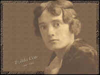
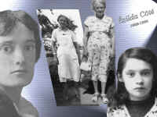
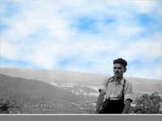
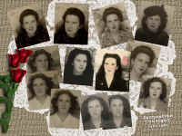
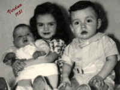

To mark an event, a theme, some people, or simply a lovely picture, here is a set of desktop wallpapers (at 800 x 600).

Ézilda Côté-Consigny


Under a blue sky (Gérard Charette)

Photo booth (Jacqueline Consigny)
The patriarchs of St-Henri
Alphonsine and Arthur
Alphonse and Marie
Rosario and Marie-Anna

Verdun 1951 (Christiane, Nicole, André)
TO BE CONTINUED...
Home Sections Desktop wallpapers
Site created on September 3, 2002 Last updated in January 2010
nicole.charette@zonecharette.ca